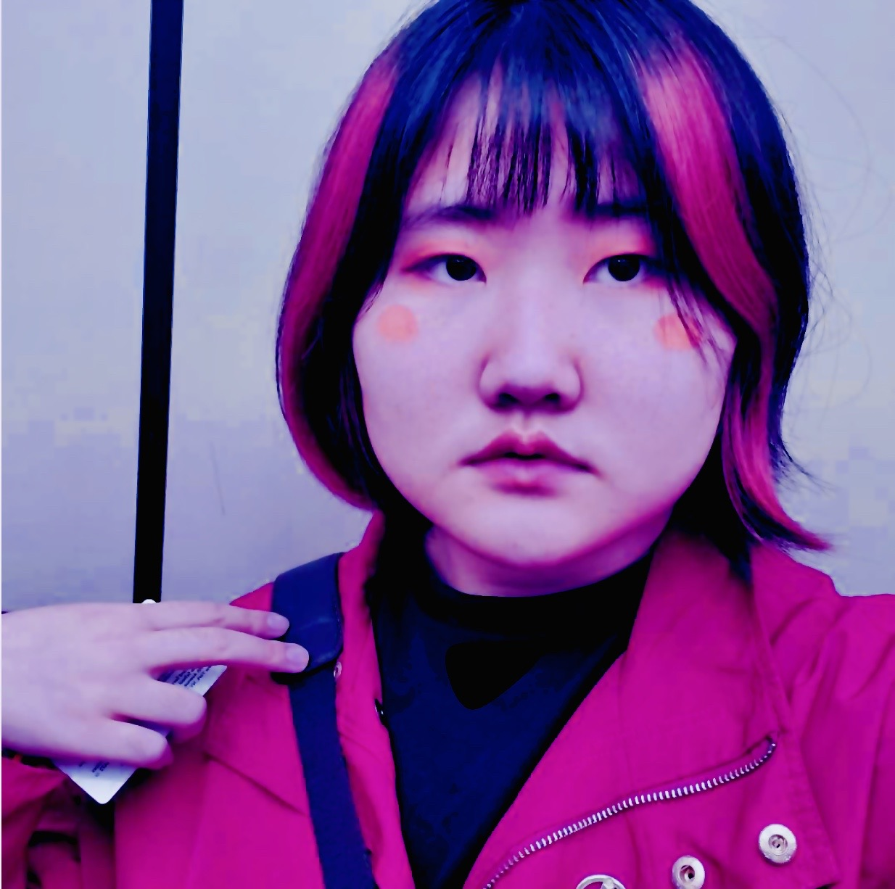

Hello! I am Caitlin!
Caitlin Du is a visual artist specializing in illustrations and comics. Caitlin was
born and raised in Beijing, China. In 2018, her work was exhibited in the Metamorphosis Charity Exhibition in
the UCCA Center for Contemporary Art in the 798 art district. Caitlin arrived in New York City in 2019 to study
illustration at Parsons School of Design. During her time in the US, her art has been featured on the 12th
Street Journal and the Collaborative Clarinet in Concert Exhibition between Mannes School of Music, New York
Youth Symphony and Parsons School of Design.
